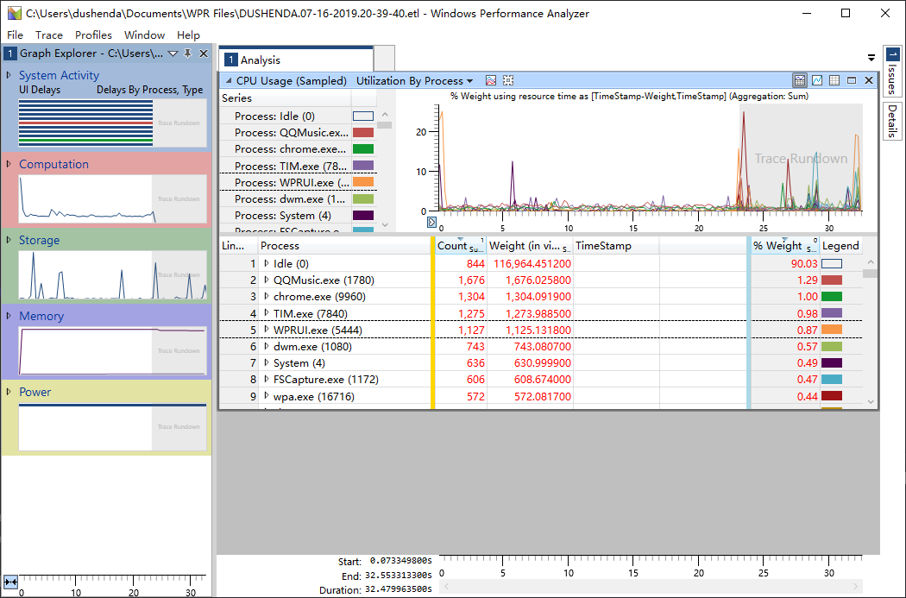
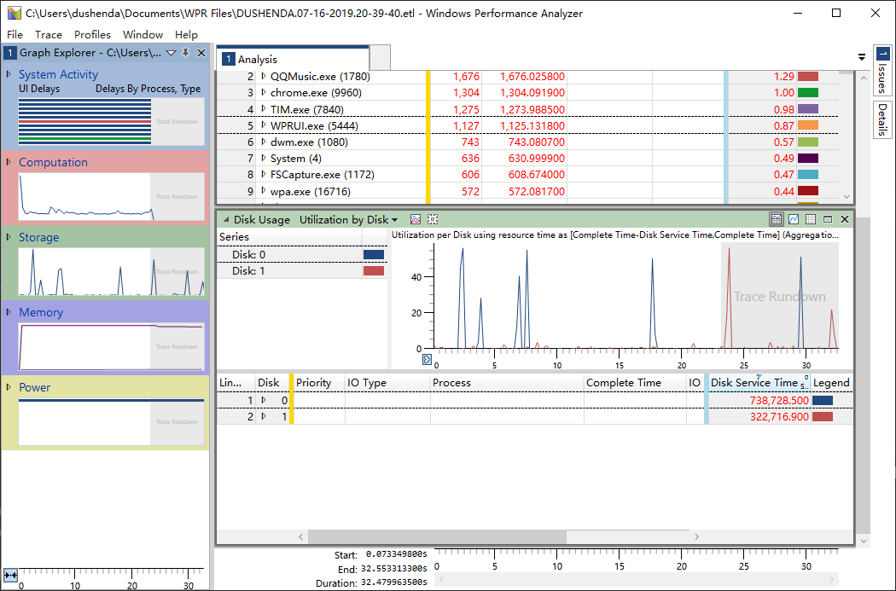
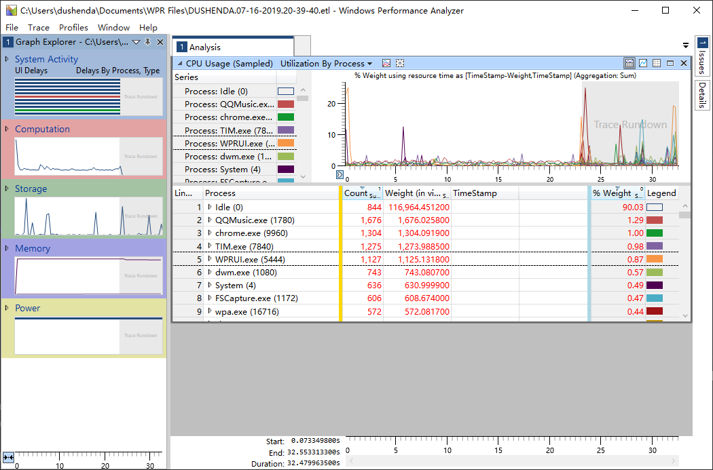
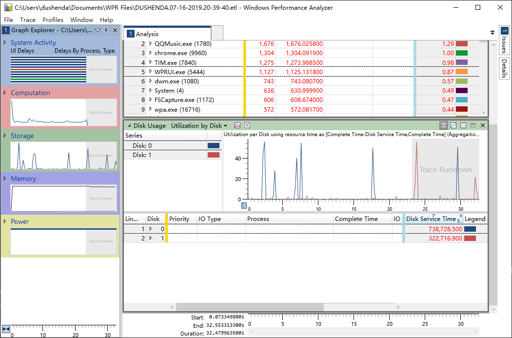

性能分析-Windows（一）
Windows运行参数分析
这篇文章较为简单，主要是使用 Windows Performance Record 和 Windows Performance Analysis 来分析在运行一段时间内的各个参数的变化，记录详细的信息。
一般大家都是从任务管理器上面来看机器当前的运行状态，但是，如果我想要了解的更详细一些，并且需要一段特定时间的运行参数，任务管理器仿佛就无能为力了，这时候，可以使用 Windows 测试框架里面的两个小工具来记录分析机器的运行状态。

Windows Hardware Lab Kit (Windows HLK) 是一个测试框架，用于测试 Windows 10 以及从 Windows Server 2016 开始的所有 Windows Server 版本的硬件设备。 你的产品必须通过使用 Windows HLK 进行的某些测试，才有资格加入 Windows 硬件兼容性计划。
Windows 性能工具包位于 Windows 评估和部署工具包中，其中包含各种性能监控工具，这些工具可生成有关 Windows 操作系统和应用程序的详细性能概况。 本文档同时讨论了 Windows Performance Recorder (WPR) 和 Windows Performance Analyzer (WPA)。
包含在Windows 评估和部署工具包 (Windows ADK)，Windows 性能记录器 (WPR) 是一种性能录制工具为基础上事件跟踪 Windows (ETW)。 它记录系统事件，然后可以通过使用 Windows Performance Analyzer (WPA) 进行分析。
包含在Windows 评估和部署工具包 (Windows ADK)，Windows Performance Analyzer (WPA) 是一种工具，创建的事件跟踪 Windows (ETW) 事件所记录的 Windows 性能的关系图和数据表记录器 (WPR)、 Xperf 或评估运行评估平台中。 WPA 可以打开任何事件跟踪日志 (ETL) 文件进行分析。
Windows Performance Record
在程序中搜索到 Windows Performance Record 并且打开，

从当前时刻开始记录，记录完成后保存文件


记下文件保存位置
Windows Performance Analysis
在程序中找到 Windows Performance Analysis 并且打开

File->Open，打开前面保存的文件
  
 